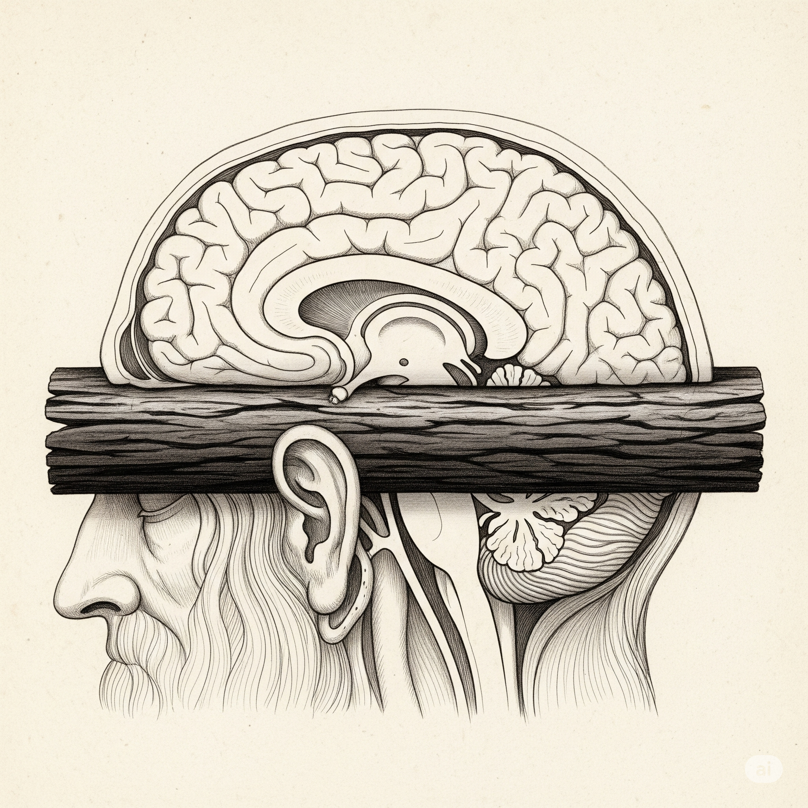
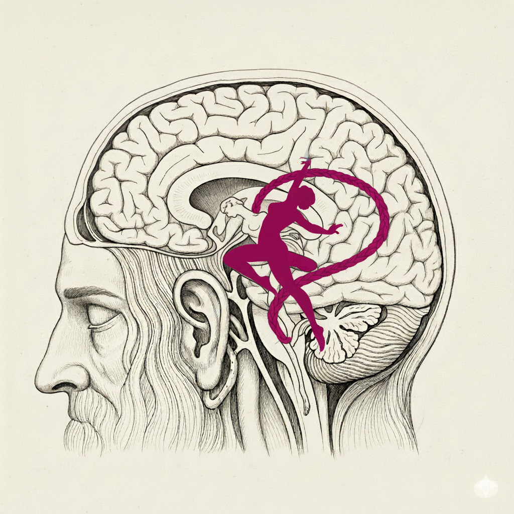
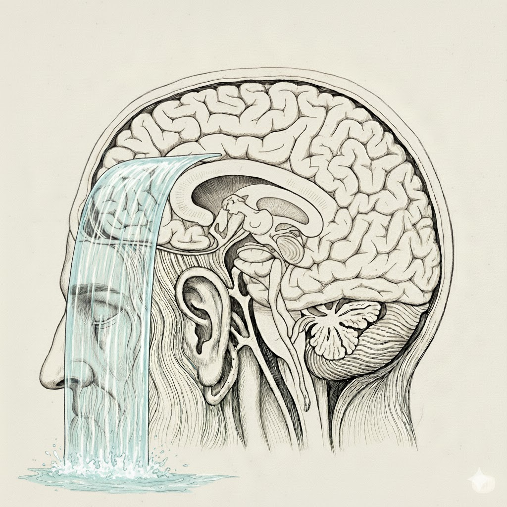

Table of Contents
The Metaphenomon of ASMR
An autonomous sensory meridian response (ASMR)[2][3][4] is a tingling sensation that usually begins on the scalp and moves down the back of the neck and upper spine. A pleasant form of paresthesia,[5] it has been compared with auditory-tactile synesthesia[6][7] and may overlap with frisson.[8] ASMR is a subjective experience of "low-grade euphoria" characterized by "a combination of positive feelings and a distinct static-like tingling sensation on the skin". It is most commonly triggered by specific auditory stimuli, and less commonly by intentional attention control.[1][9]
The term ASMR can also refer to media (usually audiovisual) meant to evoke this phenomenon, with the sensation itself being informally referred to as "tingles".
The original blog post was "WEIRD SENSATION FEELS GOOD" in internet forums somewhere around 2010. 1
The phenomenon ASMR obviously was part of the human condition before 2010. It just historically contingent fact that in this culture nobody gave it a name, nobody talked about it and it was not a thing; The moment something has a name, we can refer to it, we can manipulate it, we have a handle on it.
In fantasy books, some magic systems are based on naming. And naming a spirit is an important concept of programming philosophy 2.
Words put handles on things so we can manipulate them, hold them down offer them to others, …
concept: A mental datastructure, a full fledged citizen of mentality, capable of being referred to, capable of having a pronounciation (having a name, a word), capable of being a meme.
In some ways science and using imagination is giving names to things, thereby making them a thing.
The Metaphenomon of ASMR: ASMR was not a thing until it was a thing.
A psycho-physiological phenomenon similar to goosebumps, presumably part of the human psyche before even sapiens, yet it was not a thing until we gave it a name.
ASMR is an example of a whole art form and an emerging cognitive psychology. Just by talking about a thing.
"This only happens to me".?
Maybe inner psychological phenomenon have a tendency to fly under the radar?
Maybe it is a mix of shame, the need to keep some things private, and the challenge of verbalizing mental phenomena. The person of 'WEIRD SENSATION FEELS GOOD' needed to confess somehow, didn't he?
Talking about mental phenomena out in the open is rare. One thinker that has made it his avocation is Douglas Hofstadter.
"This only happens to me" is a form of solipsism. How different could stuff be? Humans share a genetics and a brain hardware.
On the software / mentality layer, every person is different form others, perhaps even maximally different. [David Deutsch thinks as different as species are from each other - perhaps even as different as different trees of life would be from each other].
But on the hardware architecture layer. For all the parts where the genes had the chance to adapt a design of a computer system, on this level we should be relatively similiar; Because a evolutionary proven design is used.
By the same logic of Convergent Evolution, the relevant aspects of the design should deviate very little from the local optimum.
Douglas Hofstadter described the , a specific, visceral sensation associated with cognitive effort. When I experienced this 'abstraction ceiling feeling' myself, I thought 1) this is a real component of human experience. 2) Basically nobody talks about it.
- What if there is a whole array of things that are sort of like ASMR, that are not talked about but are interesting 3a) either understanding
the nature of cognition or 3b) simply for artistic enjoyment?
So here I am on the quest for unnamed things. Private psychological phenomenons which have no name, and no community. The generalized notion of an ASMR-like phenomenom - I just say brain feeling (german: Hirngefühl).
Let's look for "brain feelings" without narrowing down too much what they could be.
Brain Feelings
Hofstadters Abstraction Ceiling
When I hit math graduate school I hit what I call, I describe it in [Strange Loop Book]. An abstraction ceiling and it was a very unpleasant experience. It was about as unpleasant as hitting myself you know when you stand up and there's a open cupboard and you stand up quickly and it hurts like hell, well that's how it felt.
D. Hofstadter at Stange Loop 2021
I have captured an abstraction ceiling moment in an audio diary, here complete stream of consciousness style text:
Analogies about analogies...?
It is like - say you categorize the move of an analogy in design space. Like 'this is knight shape, it goes one up and 2 left or something'. ... and then you can say things 'this shape relates to this other shape in the space of moves of analogies'. let's say 'the atom is to the solor system as the what is to the what?'. Calling a program multiple times with different arguments is like making a function call within an application. The atom is to the solarsystem like a subroutine to a program. I remember somebody saying functions/ subroutines are programs within programs. It took me some time to actually connect this. So here I have 2 analogies that have the same shape I think I'm allowed to say this. Either way. Let's say something harder like taking an analogy pair but fill out a missing part. But something in the space of analogies... Let's say "The atom is to the solarsystem like the Baldwin Effect is to /what/" ?[a few moments of thinking]
Direct quote from my audio diary:
… woar! I wonder if somebody super, super smart would have an idea what to say now.
Holy shit.
Hofstadter was saying it is like a cupboard and you stand up and hit your head and I have almost the same feeling right now.
Holy shit, what the hell I have the abstraction ceiling what the fuck?
Woar, it's exactly how this feels.
For some reason something in this feeling tells me. Like part of why this is so painful in a way…
It is not painful actually, but the concept of it.
Part of it is feels like, … it's completely impossible for me to grow out of this.
Like this is the first barrier I ever encounter where I don't have the deep feeling … - That I would in principle be capable of growing on it …
It is deeply unsettling.
The abstraction ceiling brain feeling feels like there is a plank of wood going through your head. Like you banged your head on some wood right above you, but actually the wood is inside your head now.
If you have this sensation, there is no mistake about it. There is a viscerality to it, as substantial as pain is a feeling. It is located across the head.
The shape is such that if you would have put on a small hat, everything above the hat-line feels 'turned off', tortiously so.
In it's weaker form, it feels like one put's on a cap, a cap that makes thinking harder, 'in the upper parts of ones brain'.

Figure 1: AI generated image attempting to depict the feeling of a Hofstadter abstraction ceiling. A piece of solid wood goes through the brain in the horizontal plane. Roughly parietal, dorsolateral prefrontal and premotor cortex are above the line. (the picture is not correct).
Audio diary:
I never had this feeling, that there is something I would not be able to conquer mentally.3
This is visceral feeeling. This is not on the level of thought-content, not on the level of ideas or insight.
This came relatively suddenly, or I noticed it suddenly. It stayed for certainly more than 20 seconds but certainly not more than 5-10 minutes.
My personal pet hypothesis is that is a hardware level feedback from the machinery of the brain. Appendix A: Hardware Level Sensors?.
The Jolt of Fun / The Humor Ball / The Muses
I could put every single word in quotations or say it like this:
A few times I felt a joke jumping like some kind of lump of electricity from somewhere, usually the head, into my mouth, where it could be spoken effortlessly.
Could it be the same circuits involved in tip of the tongue - Destination speech muscles?
- I once had the experience of a 'lump / ball' coming from inside the head, a bit above the left ear and 'falling' into my mouth.
- This was fast, like half of a second.
- Somehow I could speak the joke, then.
- This is almost diametrical opposite of mental effort, it feels like something is simply 'coming into the mind', but with forewarning in the form of a sensation.
Other times it would 'jolt' out from the belly or heart and the be sort of ready to be spoken; As if possessed, ignited by the idea. This happens faster than a second.
During those times, it is as if jokes are spirit animals that make their way to the mouth.
The muses were the idea that creativity comes from some spirit gods, that one recieves the spirits and merely expresses them when doing art.
Given the extreme dynamical nature of the software system of the brain; The infinite openness and intricacy of it's search spaces; It is not too crazy of a perspective to take; To see the brain as a kind of reciever of ideas or even software animals, which are out there in the space of possible software - waiting for the right kind of brain to come along, which they inhabit.
The Chat Dim Offload
"The chat Dim Offload": The feeling of ones problem solving mentality to be turned off, the moment you chose to open a chat window to ask about your problem.
I feel a subtly visceral 'slumping' / 'drooping', 'loss of forward action', 'loss of poise'. It feels like something is turned off in my forehead. That my forehead is soft and 'turned off'.
It is a momentary feeling that stays on the order of 1-5 seconds.
Situation:
- I have a problem.
- I usually would use my mental resources to make progress on solving the problem.
- E.g. start debugging, start reading code, start making notes, start thinking about what I need to google, etc.
- After using LLM chats for a while, I notice instead of using my mental resources, I open a chat window.
- I have a subtle brain feeling, the 'chat dim offload'.
- It's relative disconcerting.
- You might know about MIT EEG Study with the bottom line, solving a problem with a chat window means less brain activity.
- It could have been otherwise, but apparantly using ones brain also means there is activity.
- I recommend Cal Newport as antidote.
The Swiper
I have seen, in a group of young programmers, a spread of a peculiar head motion (cultural meme).
This was using ones neck muscles to cock the head to the side (either sides), with an occasional flip, as if to fling out, or swipe away objects in the head (one side).
It was accompanying coding behavior, and seemed to signal a situation of mental effort, technical thinking and focus.
I have seen a version of this by the 'mental calculator' Rüdiger Gamm.
I would tentatively say he seems to move his head as if on tracks.
If I had to guess, I would think he has a system of mnemonics where mentally, each part of the calculation outcome is seen in his imagination from left to right.
He probably can speak the number without the movement, but why should he?
Here are my thoughts on this interplay of cognition and movement.
The German speaking world discovered a core concept of neurophilosophy early, the Efference Copy. The same concept was discovered in neurophysiology and called Coroallary Discharge [Sperry 1950].
Broadly speaking, it is usefull to copy the signals going from the brain to muscles, back into the brain as inputs.
One reason for this is to factor out ones own movement from movement in the world. The best example are the eye movements.
You can observe the logic of this effect:
- The world stays still even though you move your eyes.
- You are blind for a moment during eye movement - see Saccadic masking. This can be observed powerfully by looking at your face in the mirror for a short while. You never see your eyes move.
- Press sideways on your eyeball gently. Here, the world / the vision moves peculiarly. Only the eye movement motor systems are hooked up to allow for this movement factoring, not external eyeball press movement.
Clearly, through movement (mental or motor), the brain can stimulate itself and create it's own "micro" situations.
If there are neuronal subnetworks representing certain mental resources, and the subnetworks find a way to stimulate themselve by using motor resources, then why shouldn't they do so?
Through plasticity, the resources associate with the movement. A movement can then conviniently become a kind of button to press for the person, activating certain mental states.
This effect is operationalized in a technique called 'Anchoring' of self-hypnosis (also Autogenic Training).
It is the definition of 'utilizing all of ones available resources'. And a real version of the idea of 'using 100% of the brain'.
While using a mind palace, I have developed a similar habbit.
I would either mentally or actually move my head and also flick of the hand, as if to swipe away thoughts/ideas, which were distracting from the task at hand.
At other times, using the hands like a conductor, pointing to and 'arranging' objects in the imaginary scene. This helps.
A version of this is depicted in the form of the loathsome Charles Augustus Magnussen villian [Sherlock TV Series], who keeps incriminating data in his mind.
Mental Effort | Imagine!
- Imagine a cube with all sides simultanously, put the effort.
- Imagine multiple melodies at the same time. Beginner is 2. 3 and 4 is advanced.
- Imagine a gear turning one way, imagine a second gear moving with it, add as many gears as possible, keep track of the movement using imagination.
- Learn memory techniques
Mental effort feels similar to working out - the feeling of going into the effort.
What exactly is the nervous system doing when this happens? Meassuring sugar consumption?
Minsky 2007 came up with an idea of an Imagine! book full of imagine exercises of gradually increasing difficulty. What if things like this are missing dimensions of education? If the field of education would be more advanced, perhaps you could teach all of school math in 2 years.
Minsky [The Emotion Machine 2006] has another idea on mental effort. What if a 'high intelligence person' is simply somebody that learned to enjoy the pain of mental effort early on?
The Mind Twist

Figure 2: AI generated drawing trying to depict a mind twist brain feeling. A human head with a contortionist figure in the middle.
Situation:
- Sort of have the idea that a concept would apply analogously to another domain.
- I try to keep in mind both domains and the concept at the same time,
- I have a 'glimpse' of it 'fitting together', a 'glimpse' of the unified perspective.
- It causes me significant mental effort to attempt to 'recreate' the insight from the 'glimpse'.
- It feels like I have to 'twist' my mind, it feels like I sort of know the shape I want my mind to be, but it is demanding to 'contort' it.
- Then it 'clicks' and the perspective is available, and the analogy makes sense.
Concretely, this happened to me:
- I read The Rational Optimist Matt Ridley (2011), a while back.
- Similar to Harari's Sapiens it describes the effects of commerce / trading on human society and stuff like that.
- For instance commerce drivers specialization etc.
- I am inspired by Minsky The Society of Mind, where a core idea being collaboration mechanisms of multiple agents.
- In the book, he describes how flooding the labor market with cheap labor makes a society lose specialization.
- I think "shouldn't this kind of concept have something to say in a cognitive system of agents?".
- I think of both Chinese farmers having children and my then view of a Society of Mind software system.
- I have the 'mind twist' described above, I 'glimpse' the perspective unifying them… then put mental effort, as if I need to twist my mind.
- I need to take on a certain perspective which I did not before.
- After I can think "If a cognitive system would be flooded with general purpose agents, they would specialize less".
- And the general, unifying perspective is on the level of abstract agents and their degree of specialization etc.
The Water/Glass Wall of No Return

Figure 3: AI generated drawing trying to depict a Water/Glass Wall of No Return mind feeling. A head with a water fall in the front.
- I have this to varying degree of intensity. It happens when I engage in a confrontational situation.
- When I decide to say/ behave in a way that can be hard for the other person / the relationship.
- for instance when I set a hard boundary, or make a foundational criticism to a team member.
- If feel like there is a soft wall, through which I go through with my head.
- Kinda like it is made from water
- In the most intense version I know, even my vision would blur for a moment.
- This takes on the order of 1-2 seconds and is quite salient.
- The 'shape' of this 'wall' can be different;
- I remember at least once where it was to the right side only, like a blob.
Conclusion
Tentative definition:
brain feeling: A sensation that seems to be located inside our around the head; It appears to be associated with mental content or features of cognition itself, making it a meta cognitive feeling.
Please contact me if you know a potential brain feeling.
Appendix A: Hardware Level Sensors?
- The
brainis a computer (software running on hardware) withinputsfromsensory surfaces, like retina, cochlea, skin receptors, sensory aparati.
- Idea: There should / could be hardware level feedback sensory aparati. Just as simple as additional sensory surfaces, but they readout states of the central nervous system. For instance the amount of activity.
Sounds reminiscent to Attention Schema Theory (AST) but is a more general idea.
content level: The software content. For example my datastructure is about a shopping cart.
harware level: 'superficially' measurable aspects of the machinery of a computer. For instance the temperature of the wires.
In other words, if we have sensors for the state of the nervous system itself; It would make sense to feel them as another kind of interecoption - as brain feelings.